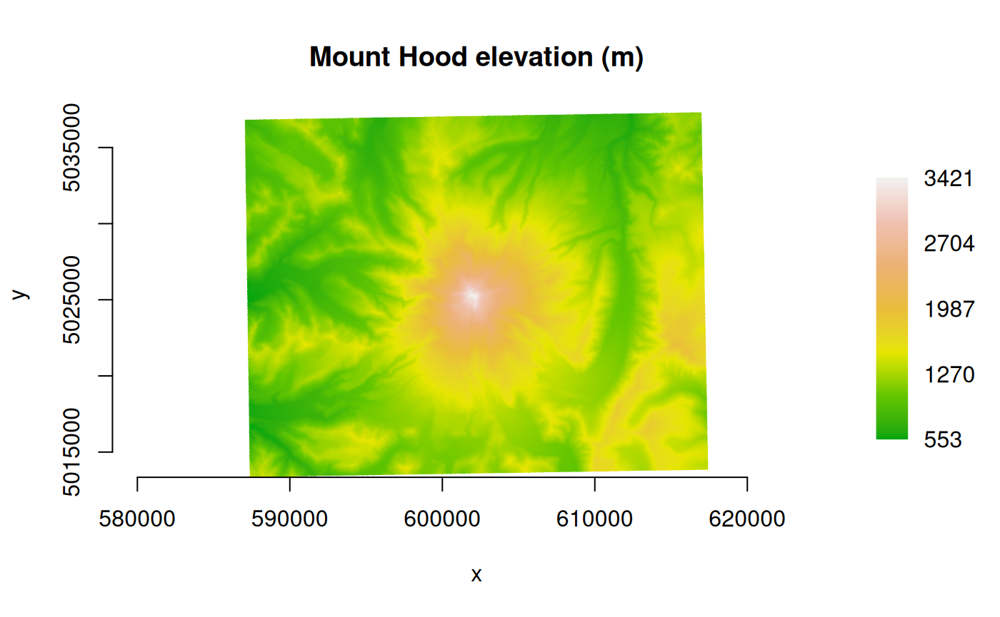
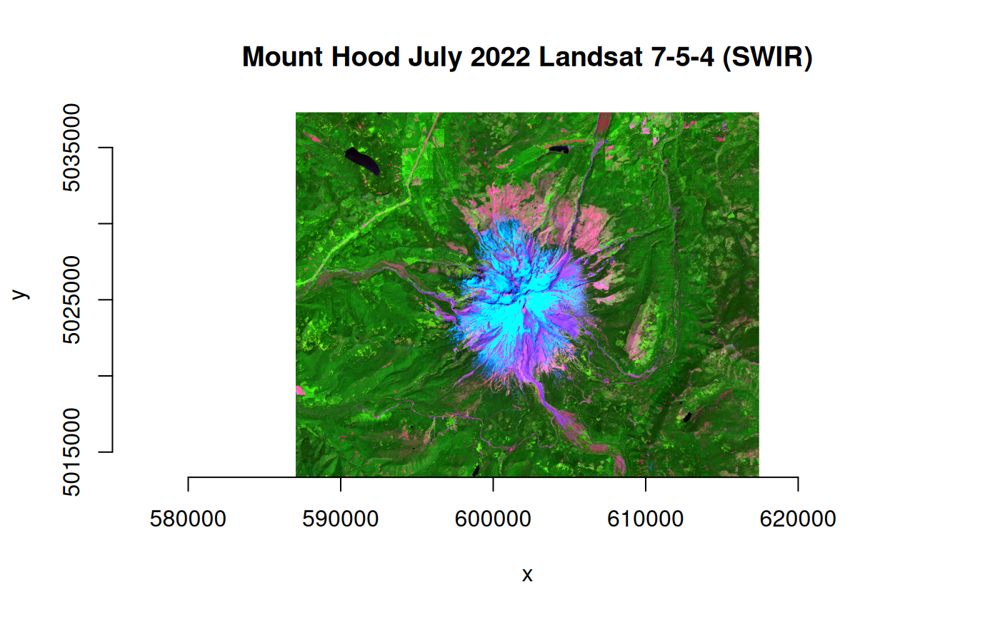

plot_raster() displays data using base R
graphics. The function will read from an open dataset, or
use pixel values that have already been read into a vector.
library(gdalraster)
#> GDAL 3.4.1, released 2021/12/27, GEOS 3.10.2, PROJ 8.2.1
base_url <- "/vsicurl/https://raw.githubusercontent.com/usdaforestservice/gdalraster/main/sample-data/"Single-band grayscale or color ramp
f <- paste0(base_url, "lf_elev_220_mt_hood_utm.tif")
ds <- new(GDALRaster, f)
# gray
plot_raster(ds, legend=TRUE, main="Mount Hood elevation (m)")
elev_pal <- c("#00A60E","#63C600","#E6E600","#E9BD3B","#ECB176","#EFC2B3","#F2F2F2")
ramp <- scales::colour_ramp(elev_pal, alpha=FALSE)
plot_raster(ds, legend=TRUE, col_map_fn=ramp, main="Mount Hood elevation (m)")
ds$close()RGB
f <- paste0(base_url, "landsat_c2ard_sr_mt_hood_jul2022_utm.tif")
ds <- new(GDALRaster, f)
# passing a vector of pixel values rather than the open dataset
r <- read_ds(ds, bands=c(7,5,4))
ds$close()
# normalizing to ranges derived from the full Landsat scene (2-98 percentiles)
plot_raster(r,
minmax_def=c(7551,7679,7585,14842,24997,12451),
main="Mount Hood July 2022 Landsat 7-5-4 (SWIR)"
)
Color table
f <- paste0(base_url, "lf_fbfm40_220_mt_hood_utm.tif")
ds <- new(GDALRaster, f)
dm <- ds$dim()
print(paste("Size is", dm[1], "x", dm[2], "x", dm[3]))
#> [1] "Size is 1013 x 799 x 1"
# using the CSV attribute table distributed by LANDFIRE
fbfm_csv <- system.file("extdata/LF20_F40_220.csv", package="gdalraster")
vat <- read.csv(fbfm_csv)
head(vat)
#> VALUE FBFM40 R G B RED GREEN BLUE
#> 1 91 NB1 104 104 104 0.407843 0.407843 0.407843
#> 2 92 NB2 225 225 225 0.882353 0.882353 0.882353
#> 3 93 NB3 255 237 237 1.000000 0.929412 0.929412
#> 4 98 NB8 0 14 214 0.000000 0.054902 0.839216
#> 5 99 NB9 77 110 112 0.301961 0.431373 0.439216
#> 6 101 GR1 255 235 190 1.000000 0.921569 0.745098
vat <- vat[,c(1,6:8)]
# read at reduced resolution for display
plot_raster(ds, xsize=dm[1] / 2, ysize=dm[2] / 2,
col_tbl=vat, interpolate=FALSE,
main="LANDFIRE surface fuel class (FBFM40)")
ds$close()Axis labels
f <- paste0(base_url, "bl_mrbl_ng_jul2004_rgb_720x360.tif")
ds <- new(GDALRaster, f)
srs_is_projected(ds$getProjectionRef())
#> [1] FALSE
r <- read_ds(ds)
ds$close()
plot_raster(r,
xlab="longitude", ylab="latitude",
main="NASA Earth Observatory Blue Marble July 2004"
)